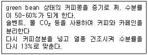
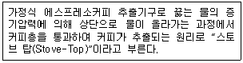

바리스타-2급 (2005-11-26 기출문제)
1과목: 커피학 개론
1. 커피의 과실을 형태학적으로 분류하면 무엇인가?
- 장과(漿果)
- 핵과(核果)
- 견과(堅果)
- 건과(乾果)
(정답률: 80%)

2. 다음의 커피 종류 중 종자가 다른 것은?
- 타이피카(typica)
- 버본(Bourbon)
- 카투라(Caturra)
- 코닐론(Conillon)
(정답률: 68%)
3. 피베리(Peaberry)에 대한 설명으로 바르지 못한 것은?
- 스페인어로 카라콜리로(Caracolillo)라고 하며 달팽이 모양의 콩이라는 뜻이다.
- 아라비카종의 열매 안에는 대체로 두 개의 콩이 자리잡고 있으나, 간혹 한 개의 콩만 들어 있는 경우가 있는데 이러한 생두를 지칭한다.
- 주로 가지 끝에 열린 체리에서 쉽게 발견할 수 있는데 모양이 아주 둥글어 육안으로 식별이 가능하다.
- 커피 열매에 콩이 하나만 들어있어 저급커피로 인식되며, 유통되고 있지 않다.
(정답률: 75%)
4. 생산국에 따른 유명한 커피가 옳게 짝지어진 것은?
- 코스타리카 - 블루마운틴
- 과테말라 - 코나커피
- 브라질 - 안티구아
- 인도 -monsooned Bean
(정답률: 71%)
5. 생두를 얻기 위해 커피 과육에서 껍질을 벗겨내는 가공 방식에 해당하지 않는 것은?
- 자연건조법
- 세척법(워시드)
- 세미워시드
- 자연가공법
(정답률: 52%)
6. 로부스타종 커피식물의 특징이 아닌 것은?
- 아프리카 가봉에서 처음 발견되어 카네포라의 한 변이종이 되었다.
- 나무의 높이가 10m 이상으로 아라비카종과 리베리카종의 중간성질을 가지고있다.
- 세계 각지에 70여종의 많은 재배 변이종이 분포되어 있다.
- 곰팡이병에 저항성이 강하며, 인도네시아 등에 넓게 재배되고 있다.
(정답률: 42%)
7. 우리나라에서 처음 커피를 마신 사람은 고종(高宗)이다. 고종은 덕수궁 내에 우리나라 최초의 로마네스크풍의 건물을 지어 이곳에서 커피와 다과를 즐겼다고한다. 이곳은?
- 밀다원
- 카페 세실
- 정관헌
- 난다랑
(정답률: 82%)
8. 커피에 쓴맛을 부여하는 알칼로이드 물질은?
- 테오브로민
- 나린진
- 휴물론
- 카페인
(정답률: 81%)
9. SCAA 분류법 중 Specialty Grade의 등급기준에 해당하는 것은?
- 300g 안에 10개 이내의 Full-Defects가 있으나 Primary -Defects는 허용하지 않는다.
- 생두의 크기는 50% 이상이 15 스크린 이상이어야 한다.
- 생두의 허용 함수율은 9~13% 이내 이다.
- Body, Flavor, Aroma, Acidity 등의 4가지의 특징 중 4가지를 다 가지고 있어야 한다.
(정답률: 47%)
10. 우유의 영양적 가치를 설명한 것 중 맞는 것은?
- 칼슘이 풍부하게 들어있다.
- 비타민 D가 풍부하다
- 철분이 풍부하다.
- 유당이 적게 함유되어 있다.
(정답률: 72%)
11. 커피의 맛과 향을 표현한 용어에 대한 설명 중에 틀린 것은?
- Spicy : 강하고 자극적인 맛과 향
- Nutty : 견과류에서 나는 고소한 냄새
- Rich : 풍부하고 진한 맛과 향
- Grassy : 달콤한 꽃잎 향기
(정답률: 63%)
12. 커피콩의 구입시 포장에 명시된 상품명인 〔Brazil Santos NO,2 ? screen 19?strictly soft〕에서 screen 19의 의미는?
- 결점두의 혼입량
- 커피콩의 크기에 의한 분류
- 투명도의 정도에 의한 분류
- 커피콩의 형태에 의한 분류
(정답률: 70%)
13. 커피의 향미를 평가하는 순서로 가장 적당한 것은?
- 향기, 맛, 촉감
- 색깔, 촉감, 맛
- 촉감, 맛, 향기
- 맛, 향기, 촉감
(정답률: 78%)
14. 맛있는 커피를 만들기 위한 조건이 아닌 것은?
- 갓 볶은 신선한 원두
- 커피를 뽑는 사람의 기술
- 볶음도에 알맞은 추출기구
- 광물질이 풍부하게 함유된 경수
(정답률: 76%)
15. 다음 커피의 등급에 관한 단어들 중, 커피의 품질 정보와 관계가 없는 것은?
- 품종
- 향미
- 결점도
- 색도
(정답률: 47%)
16. 카푸치노에 첨가하는 거품우유(Steaming milk)를 만들 때 주의해야 할 내용과거리가 먼 것은?
- 우유에 스팀노즐을 넣을 때 우유에 담기는 노즐의 깊이를 적절히 조절한다.
- 거품 만들기에 사용하는 우유는 신선하고 차가운 것을 준비한다.
- 피쳐(Pitcher)는 도자기, 유리, 스테인리스 스틸 등의 재질로 만든 것이 좋다.
- 거품을 만들 때 스팀노즐을 우유 표면인 위쪽에 두면 거품생성이 잘 되지 않는다.
(정답률: 59%)
17. 아래 보기의 조건으로 만들어진 커피를 무엇이라고 부르는가?

- 맥심(Maxim)커피
- 인스턴트(Instant)커피
- 헤이즐넛(Hazel Nut)향커피
- 디카페인(Decaffeinated)커피
(정답률: 69%)
18. 우유 단백질에 속하는 성분이 아닌 것은?
- 카제인
- 베타-락토글로불린
- 오브알부민
- 락토페린
(정답률: 58%)
19. 다음은 커피 발전과정에 관한 내용들이다. 이 중 사실과 다른 것은?
- 네덜란드인이 커피나무를 쟈바와 서인도 섬에 재배를 시작한 시기는 12세기 말경 이다.
- 한국의 최초 커피하우스는 손탁호텔이었다.
- 17세기 말경 미국은 영국 홍차 대신 커피 마시기를 독립운동으로 권장하였다.
- 커피 문화가 급속도로 확산된 17세기부터 19세기에는 프랑스의 계몽 운동과 이탈리아 르네상스 운동이 싹튼 시기로서, 커피 하우스는 사회 여론을 모으고 여과하는 장소로서 적합했다.
(정답률: 55%)
20. 인도네시아에서 커피를 경작하여 대규모 커피경작의 역사를 연 나라는?
- 포르투갈
- 네덜란드
- 프랑스
- 영국
(정답률: 70%)
21. 세계의 커피 재배 적지라고 불리어지는 “커피벨트(coffee belt)"는 어느 지역인가?
- 북위 25도 와 남위 25도 사이를 말한다.
- 북위 20도 와 남위 20도 사이를 말한다.
- 북위 25도 와 남위 20도 사이를 말한다.
- 북위 20도 와 남위 25도 사이를 말한다.
(정답률: 69%)
22. 커피 생콩에 함유된 caffeine에 대하여 잘못 설명한 것은?
- 커피 생콩의 purine 염기류에 속하며, 품종 및 재배지에 따라서 함량 차이가 크다.
- Caffeine함량이 아라비카종은 로부스타종에 비하여 약 2배 이상 함유되어 있다.
- Caffeine 이외의 theobromine 등은 로부스타종 미숙과에서만 함유되어 있다.
- 커피나무의 종자뿐만 아니라 잎에서도 소량 함유되어 있다.
(정답률: 55%)
23. 터키 사람들이 커피를 끓여 마시는 기구를 무엇이라 부르는가?
- ibrik
- Melior
- Kopel
- Percolator
(정답률: 62%)
24. 다음 중 Cappuccino Con Panna의 재료로서 적당한 것은?
- 에스프레소 1½ shot, 거품낸 우유 4.5 oz, 휘핑크림
- 에스프레소 1 shot, 거품낸 우유 4.5 oz, 레몬슬라이스
- 에스프레소 1 shot, 우유거품 1oz
- 에스프레소 1 shot, 휘핑크림
(정답률: 51%)
25. 아라비카 커피(Coffea Arabica)의 원산지로 알려진 나라는?
- 우간다
- 케냐
- 에티오피아
- 콩고
(정답률: 73%)
26. 수세식 공정 순서가 바른 것은?
- 수확→선별→세척(이물질 분리)→과육제거→파치먼트 선별→발효조→수세→건조 →창고
- 수확→선별→과육제거→수조→파치먼트 선별→발효조→수세→건조 →창고
- 수확→선별→과육제거→수조→발효조→파치먼트 선별→수세→건조 →창고
- 수확→선별→세척(이물질 분리)→과육제거→발효조→수세→건조→파치먼트 선별→창고
(정답률: 44%)
27. 커피생두의 질(Quality)에 영향을 미치는 요소 중 틀린 것은?
- 자연환경
- 재배가공의 선/후진성
- 기술, 장비부족
- 정치적 요인
(정답률: 71%)
28. 커피 전문점 관리에 있어서 바람직하지 못한 것은?
- 연령, 소득 등에 따라 목표고객을 분석한다.
- 가장 바쁜 시간의 영업량을 미리 예측한다.
- 동일 상권에 있어 경쟁업체를 수시로 파악한다.
- 업장의 형태와 크기는 가능한 최대로 확보한다.
(정답률: 73%)
29. 바람직한 바리스타(Barista) 상이 아닌 것은?
- 영업장 내에 필요한 물품재고를 항상 파악한다.
- 일일 판매할 재료가 적당한지 확인한다.
- 영업장의 환기 및 기물 등의 청결을 깨끗이 유지관리 한다.
- 커피 제조시 계량법을 지키지 않는다.
(정답률: 82%)
30. 다음은 커피 서비스 방법을 설명한 것이다. 틀린 것은?
- 커피를 고객에게 제공할 때는 맛과 향기가 있도록 세심한 주의를 요한다.
- 커피를 서브할 때 한잔의 양은 100ml 정도가 적당하다.
- 커피를 서브할 때에는 커피 컵은 뜨겁게 보관되어져 있어야 하며, 크림은 너무 차갑게 제공되지 않아야 한다.
- 커피의 적정온도는 120℃ 이상이 적당하다.
(정답률: 70%)
2과목: 로스팅과 향미 평가(커피 배전)
31. 커피 배전시 일어나는 물리적 현상으로 옳지 않은 곳은?
- 온도의 상승으로 원두와 실버스킨이 분리됨
- 수분이 증발하고 내부 조직이 팽창되면서 1차 크랙 발생
- 1차 크랙 발생 후 2차 크랙 발생
- 원두의 크기에 변화가 없다
(정답률: 73%)
32. 배전도에 대한 설명 중 틀리게 설명한 것은?
- 배전도는 배전과정의 가열온도와 시간에 의하여 결정된다.
- 배전도는 기계적으로 측정한 L값(명도)으로 나타낸다.
- 배전이 강해질수록 배전도를 나타내는 L값은 증가한다.
- 배전콩의 갈색정도를 표준품과 비교해서 배전도를 경험으로 정하기도 한다.
(정답률: 62%)
33. 배전과정 중 커피생콩에 함유된 caffeine의 변화에 대하여 바르게 설명한 것은?
- 열에 안정하고, 130℃이상에서는 일부 승화하여 소실되지만, 생콩에 함유된caffeine의 대부분은 배전콩에 남는다.
- 열에 안정하지만, 130℃이상에서는 일부 승화하여 소실된다.
- 열에 안정하고, 130℃이상에서는 일부분만이 승화하여 소실되지만, 최종 배전콩에 함유된 caffeine의 함량은 오히려 증가된다.
- 배전이 진행됨에 따라 유리아미노산에 의하여 caffeine이 생합성 된다.
(정답률: 47%)
34. 다음 문장 중 배전과 맛의 변화를 적절히 설명한 것은?
- 강배전일수록 신 맛이 강하다.
- 강배전일수록 쓴 맛이 강하다.
- 약배전일수록 단 맛이 강하다.
- 약배전일수록 탄 맛이 강하다.
(정답률: 65%)
35. 커피의 배전(Roasting)은 온도와 시간에 따라 저온-장시간 배전과 고온-단시간 배전으로 분류될 수 있다. 다음 중 이 두 가지 배전의 비교 설명으로 옳은 것은?
- 저온-장시간 배전은 팽창이 크고 밀도가 작은 반면, 고온-단시간 배전은 팽창이 적어 밀도가 크다.
- 저온-장시간 배전은 고온-단시간 배전보다 수용성 성분이 적어진다.
- 고온-단시간 배전의 볶는 온도는 200℃가 좋다.
- 저온-장시간 배전 시 1잔당 커피사용량은 10-20% 덜 쓰게 되서 경제적이다.
(정답률: 46%)
36. 생두를 볶는 과정에서 부피가 가장 커지는 단계는?
- 프렌치
- 하이
- 풀씨티
- 시나몬
(정답률: 53%)
37. 유지의 자동산화에 영향을 미치는 요인을 올바르게 설명하지 않은 것은?
- 자외선은 유지의 산화속도를 촉진한다.
- 온도가 낮을수록 촉진된다.
- 금속 이온은 유지의 자동산화의 연쇄반응을 증대시킨다.
- 산소의 농도가 낮은 조건에서 산화속도는 산소의 양에 비례한다.
(정답률: 50%)
38. 다음은 로스팅에 관한 내용이다. 바르게 설명된 것은?
- 생두가 열을 계속 흡수하면 조직이 수축하고 색상은 푸른색으로 변한다.
- 생두의 탄수화물, 지방, 단백질, 유기산 등은 화학반응을 일으켜 커피의 맛과향기 성분으로 변화된다.
- 프렌치 로스팅은 원두가 계피색을 띄며 신맛이 뛰어나다.
- 일반적으로 맛에 힘을 주는 강한 커피를 원하면 약하게 로스팅을 하고, 맛의미묘한 변화와 감미로운 향미의 조합을 원한다면 강하게 로스팅한다.
(정답률: 59%)
39. 커피에 함유되어 있는 탄산가스의 설명 중 틀린 것은?
- 향기 성분이 공기 중의 산소와 접촉하는 것을 막아준다.
- 커피의 추출을 방해한다.
- 커피 추출액에 거품이 생긴다.
- 커피 저장 중에 탄산가스가 방출되지 않도록 밀폐시키는 것이 좋다.
(정답률: 37%)
40. 다음 중 올바른 Aging(숙성)의 목적이 아닌 것은?
- 갓 볶은 커피는 CO2가 많이 나와 맛이 떨어지므로 숙성이 필요하다.
- 커피생두(Green Bean) 상태에서 숙성은 독특한 맛을 내는데 그 목적이 있다.
- 커피생두(Green Bean)의 숙성기간은 대개 5-10년 정도로 잘 숙성된 생두(Bean)는 맵고 쓴 냄새가 강하게 날수록 좋다.
- 커피생두(Green Bean)상태에서의 숙성은 단지 타이피카(Typica)종만 가능하다.
(정답률: 58%)
41. 커피생콩의 배전에 따라 다량으로 함유된 유리당류인 자당(sucrose)의 변화를바르게 설명한 것은?
- 배전콩의 갈색색소, 비phenolic carbonic acid류 및 향기성분으로 변화된다.
- 배전과정에 glucose, fructose의 단당류로 분해되어 배전콩에 함유되어 있다.
- 배전과정 중 다시 다당류의 탄수화물로 생합성 된다.
- 배전콩에도 그대로 남아서 sucrose로 함유되어 있다.
(정답률: 45%)
42. 배전에 의한 커피콩의 물리적 변화에 대하여 틀리게 설명한 것은?
- 배전이 진행됨에 따라 커피콩의 비중은 감소된다.
- 배전이 진행됨에 따라 커피콩의 용적은 증가된다.
- 배전이 진행됨에 따라 커피콩의 경도(압축강도)는 증가된다.
- 배전이 진행됨에 따라 세포내 성분은 gel상으로 유동화 된다.
(정답률: 40%)
43. 로스팅 단계 중 강배전(Dark Roast)에 대한 설명 중 틀린 것은?
- 커피의 볶음정도를 강하게 할수록 커피원두의 무게는 줄어든다.
- 카페인 양은 증가한다.
- 이산화 탄소는 중가하며 옅은 풋냄새향은 감소한다.
- 오일(커피 지방성분)의 양은 일정량이 늘어난 후 줄어든다.
(정답률: 45%)
44. 볶은 커피의 다음 성분들 가운데, 마시기 전 커피의 향기를 느끼게 하는 성분은?
- 케톤이나 알데하이드 계통의 휘발성 성분
- 비휘발성 액체 상태의 유기 성분
- 지방질 같은 비 용해성 액체와 수용성 고체 물질
- 커피 추출 후에도 분쇄 커피의 모양을 유지하는 성분인 불용성 경질부
(정답률: 47%)
45. 볶은 커피콩에서 느낄 수 있는 향기는 생콩에 있던 향기와, 주로 중약볶음의 커피에서 만나게 되는 당의 갈변 반응에 의해서 생성되는 향기, 강볶음으로 진행되면서 나타나는 건열반응에 의해서 생성되는 향기로 분류할 수 있다. 다음향기들 가운데 생콩에는 없던 향기는?
- 캐러멜 향
- 꽃향기
- 베리향기
- 허브향기
(정답률: 59%)
3과목: 커피 추출
46. 다음은 추출 기구에 대한 설명이다. 추출 기구의 명칭은 무엇인가?

- 모카포트
- 사이펀
- 게츠베
- 프렌치프레스
(정답률: 66%)
47. 다음 추출 방식 중 투과법에 해당하지 않는 것은?
- 융드립
- 페이퍼드립
- 에스프레소
- 사이폰
(정답률: 45%)
48. 신선한 커피를 핸드 드립으로 추출하면 표면이 부풀어 오르거나 추출액 표면에 거품이 생기는 이유는 커피에 함유된 어떤 성분에 의한 것일까?
- 탄산가스
- 유기산
- 아미노산
- 당
(정답률: 57%)
49. 다음의 드립퍼 중 다른 드립퍼보다 물이 떨어지는 속도가 늦기 때문에 드립퍼의 경사면이 큰 것이 특징이고, 1907년 독일에서 발명된 드립퍼는?
- 사이폰
- 카리타
- 더치커피
- 메리타
(정답률: 43%)
50. 배전한 커피콩을 구입하여 핸드 드립식으로 커피를 추출할 때 커피콩의 신선도여부는 육안으로 어떻게 알 수 있나?
- 신선한 커피콩은 물을 부으면 부풀어 오르지 않고 쉽게 통과한다.
- 신선한 커피콩은 물을 부으면 커피입자에 작은 기포가 생기지 않는다.
- 신선한 커피콩은 물을 부으면 커피가루의 표면이 둥글게 부풀어 오른다.
- 신선한 커피콩은 물을 부으면 커피입자에 큰 기포들이 형성된다.
(정답률: 59%)
51. 다음 중 에스프레소 추출속도에 영향을 미치는 요인이 아닌 것은?
- 분쇄된 원두의 입자크기
- 탬핑의 강도
- 분쇄된 원두의 양
- 물의 양
(정답률: 59%)
52. 추출시간을 짧게 잡아서 만든 농축된 커피로서 커피가 가장 농후하게 나오는 피크시점 직후에서 추출을 끊어 만든 이태리식 커피는?
- 룽고
- 에스프레소
- 리스트레또
- 도피오
(정답률: 49%)
53. 커피를 뽑아서 잔에 담아 낼 때, 잔의 세척이 불완전하여 세제가 남아 있을 때나타날 수 있는 향미의 결함은?
- 비린내
- 흙냄새
- 누린내
- 곰팡내
(정답률: 55%)
54. 에스프레소에 관한 내용 중 올바르지 않은 것은?
- 에스프레소는 원두에 뜨거운 물을 통과시켜서 만든 진한 원액으로, 강한 압력을 이용해서 힘 있게 커피가루를 눌러주는 원리를 이용한다.
- 섭씨 93~96도의 온도와 중력의 8~10배의 높은 압력을 가진 증기가 약20~30초 동안 통과하여 추출된다.
- 그라인더에서 분쇄된 커피를 필터홀더에 담게 되면 커피가 한쪽으로 치우치게 되므로 수평이 되도록 태핑한다.
- 에스프레소 커피 분쇄 원리는 고(高)농도의 향미 성분을 빠르게 추출하는 것이 목적이므로 다른 추출법보다 분쇄입도를 굵게 하는 편이 바람직하다.
(정답률: 67%)
55. 다음은 에스프레소 메뉴에 관련된 용어들이다. 바르게 설명된 것은?
- 도피오(Doppio): 한 입에 들이킬 정도로 '작은 잔의 커피'라는 의미의 프랑스용어이다.
- 데미타쎄(Demitasse): 더블 에스프레소를 지칭하는 이태리어이다.
- 리스트레또(Ristrotto): 시간을 길게 주어서 추출하여 쓴맛을 더 강조한 에스프레소이다.
- 프로스(Froth): 스팀을 이용해 낸 촘촘하면서도 두터운 우유 거품을 말한다.
(정답률: 52%)
56. 에스프레소 머신을 이용하는 조건 중 틀린 것은?
- 추출하는 물의 온도: 90℃-95℃
- 카푸치노의 온도 : 60℃-65℃
- 서브되는 에스프레소의 온도 : 70℃-75℃
- 보일러 스팀의 온도 : 115℃-120℃
(정답률: 43%)
57. 에스프레소용 커피입자 크기에 대한 설명이다. 틀린 것은?
- 흐린 날은 기준보다 조금 굵게 맑은 날은 기준보다 조금 가늘게 갈아 준다.
- 밀가루보다 굵게 설탕보다 가늘게 분쇄하는 것이 일반적 기준이다.
- 분쇄커피의 굵기는 추출시간과 밀접한 관계가 있다.
- 일반적으로 그라인더의 숫자는 높을수록 가늘다.
(정답률: 45%)
58. 커피의 추출방법과 이에 관련되는 보기가 적절하게 연결되지 않은 것은?
- 가압추출법 - 에스프레소 커피
- 여과법 - 핸드 드립
- 우려내기 - 프렌치 프레스
- 달임법 - 프렌치 커피
(정답률: 54%)
59. 다음은 커피장비의 관리 지침이다. 매일 해야 하는 일은?
- 보일러의 압력, 추출압력, 물의온도 체크
- 그라인더 칼날의 마모 상태
- 연수기의 필터 교환
- 그룹헤드의 개스킷 교환
(정답률: 67%)
60. 에스프레소 추출에 따른 물과 비교한 물리화학적 변화이다. 틀린 것은?
- 굴절률이 증가한다
- 표면장력이 증가한다
- 전기전도도가 높아진다
- pH가 낮아진다
(정답률: 43%)